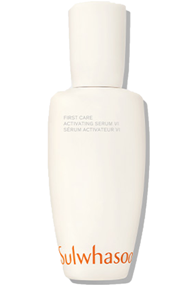

설화, 다시 피어나다.
It's Sulwhasoo
1932년, 아모레퍼시픽의 창업자, 서성환 선대회장의 어머니인 윤독정 여사가 개성에서 동백기름을 직접 만들어 팔았던 것으로 시작된 설화수의 여정.
SULWHASOO REBLOOM

1932년, 아모레퍼시픽의 창업자, 서성환 선대회장의 어머니인 윤독정 여사가 개성에서 동백기름을 직접 만들어 팔았던 것으로 시작된 설화수의 여정.
SULWHASOO REBLOOM